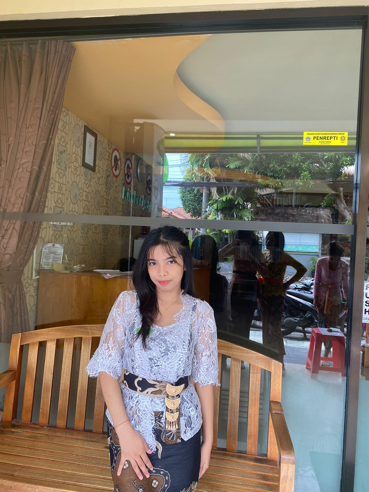

Semester 5
Mahasiswa Informatika
Informatika Student · Learning & Growing
Aku adalah mahasiswa Informatika yang sedang mengenal lebih jauh dunia teknologi, pengembangan website, dan desain antarmuka. Bagiku, setiap proses belajar adalah kesempatan untuk berkembang dan menciptakan sesuatu yang bermanfaat.

Mahasiswa Informatika
Perjalanan akademik
Bidang yang ingin dikembangkan
Mengenal pribadi di balik halaman portofolio ini.
Tidak harus langsung hebat. Yang penting berani mencoba, terus belajar, dan tidak berhenti berkembang.
— A little reminder for myself ♡Namaku Juwita Pasoloran. Aku merupakan mahasiswa Program Studi Informatika di Universitas Cokroaminoto Palopo dan saat ini berada di semester 5.
Melalui perkuliahan, aku mulai mempelajari berbagai hal di bidang teknologi informasi. Aku tertarik untuk memahami cara sebuah website dirancang, dibuat, dan dikembangkan agar mudah digunakan serta memiliki tampilan yang menarik.
Website ini menjadi ruang untuk memperkenalkan diri, mendokumentasikan perjalanan belajar, dan menyimpan momen yang ingin kubagikan.
Beberapa bidang yang menarik perhatianku dan ingin kupelajari lebih dalam selama perjalanan di dunia Informatika.
Mengenal proses pembuatan website menggunakan HTML, CSS, dan JavaScript, mulai dari struktur halaman hingga interaksi dengan pengguna.
Mempelajari perpaduan warna, tata letak, tipografi, dan desain antarmuka yang menarik, nyaman dilihat, serta mudah digunakan.
Belajar memahami masalah, menyusun langkah penyelesaian, dan menggunakan teknologi sebagai salah satu cara untuk menghasilkan solusi.
Daftar ini menggambarkan bidang yang sedang atau ingin kupelajari lebih dalam.
Beberapa teknologi dan tools untuk mendukung proses belajarku.
♡ Memahami dasar, rutin berlatih, dan berkembang secara bertahap.
Setiap langkah memberikan kesempatan untuk memahami sesuatu yang baru.
Memperkuat pemahaman tentang logika pemrograman, sistem komputer, basis data, dan konsep teknologi informasi.
Mengembangkan pemahaman HTML dan CSS, mencoba JavaScript, serta mempelajari cara menampilkan website secara online.
Belajar membuat halaman yang terstruktur, responsif, mudah dinavigasi, dan nyaman digunakan.
Berlatih membuat website dengan fungsi yang lebih lengkap, memperdalam Git dan GitHub, serta menyusun karya dari hasil belajar.
Hal-hal yang ingin kujaga selama menjalani proses belajar.
Aku ingin terus terbuka terhadap pengetahuan baru, berani mencoba hal yang belum kupahami, dan belajar dari kesalahan selama prosesnya.
Aku ingin fokus pada perkembangan diri, menyelesaikan apa yang sedang kupelajari, dan menghargai kemajuan sekecil apa pun.
Terima kasih sudah berkunjung ke portofolioku. Aku terbuka untuk berbagi informasi, bertukar ide, dan belajar bersama seputar teknologi.
Punya ide atau ingin bertukar cerita? Jangan ragu untuk menyapa ♡